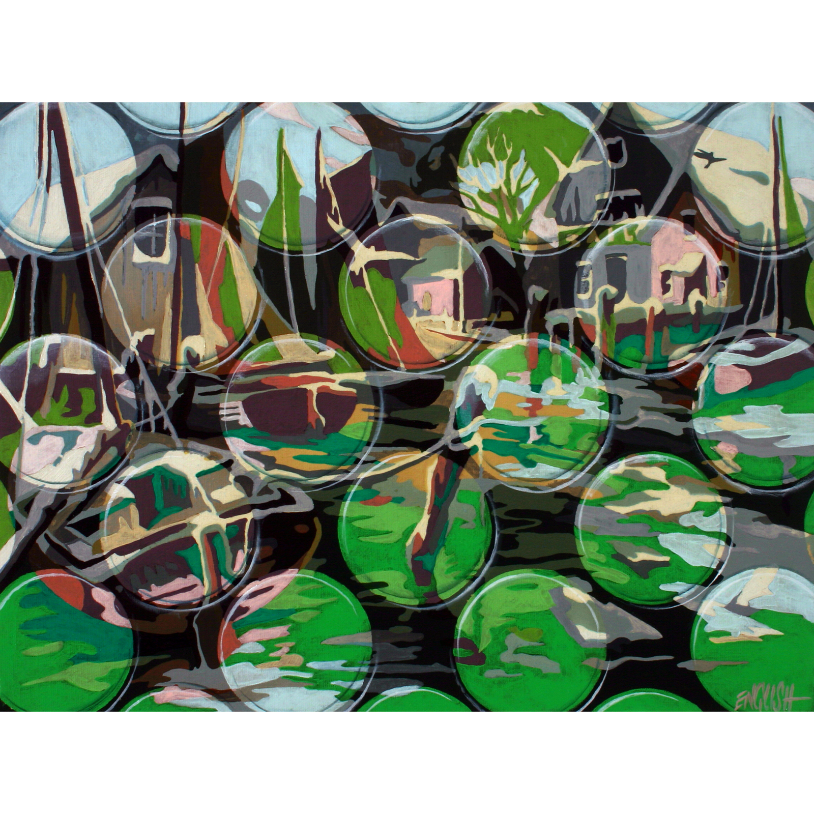
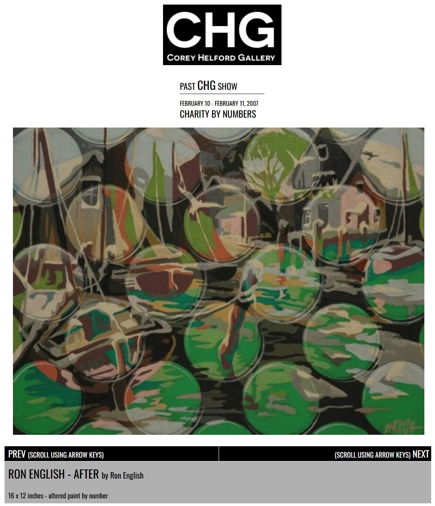

Exhibitions
Charity by Numbers, Corey Helford Gallery, Culver City, California, US, February 10–11, 2007. Benefit exhibition for The Alliance for Children’s Rights.
Notes
Also known as After.
This work appears on Corey Helford Gallery’s artwork page for the exhibition Charity by Numbers, available here, accessed April 11, 2026.
Ancillary Documentation
